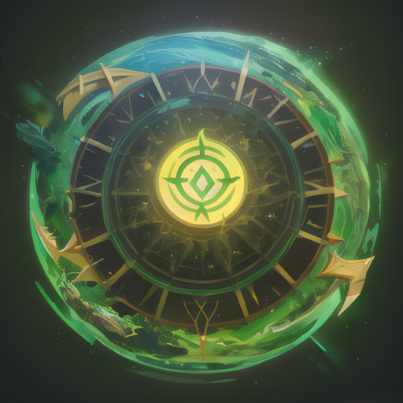
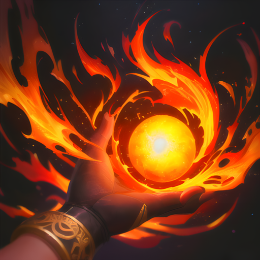
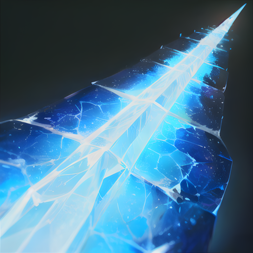
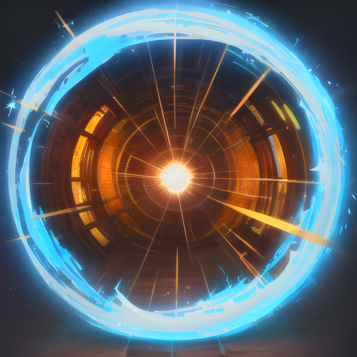
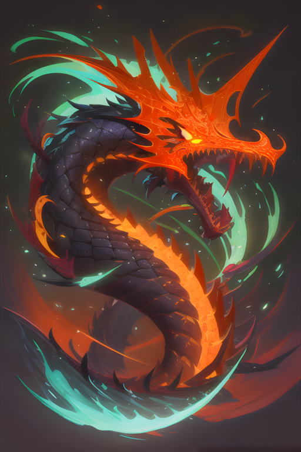

Les Sorciers
Les Sorciers

Dans l'univers d'Eternia, les Sorciers sont des maîtres de la magie qui ont été initiés aux arcanes depuis leur plus jeune âge, afin de protéger leur royaume contre les ennemis qui menacent sa sécurité. La plupart des Sorciers ont été éduqués dans des écoles de magie prestigieuses, où ils ont appris à canaliser et manipuler l'énergie magique pour lancer des sorts puissants, depuis les sorts de guérison jusqu'aux éclairs dévastateurs. Les Sorciers d'Eternia sont des combattants intelligents et stratégiques, capables d'anticiper les mouvements de leurs ennemis et de les contrer grâce à leur magie. Ils possèdent une grande connaissance des sorts, qui leur permet de s'adapter à toutes les situations. Les Sorciers sont des personnages fragiles et vulnérables en corps-à-corps, mais leur magie leur permet de se défendre efficacement à distance, en créant des boucliers magiques ou en ralentissant leurs ennemis. Les Sorciers d'Eternia sont des combattants complets, capables de se battre dans toutes les situations grâce à leur maîtrise de la magie, et constituent une force redoutable pour leurs ennemis.
Spécificité de la classe : esquive de la première attaque ennemie

La Rune de Soin est une technique de guérison très puissante que seuls les mages les plus expérimentés peuvent maîtriser. Cette technique permet de soigner rapidement les blessures du mage ou de ses alliés, ce qui peut faire la différence dans une bataille.
Lorsque le mage invoque la Rune de Soin, il canalise son énergie magique pour créer une rune lumineuse qui flotte devant lui. Cette rune rayonne d'une lueur apaisante qui dissipe les blessures de ceux qui se trouvent à proximité.
Le pouvoir de la Rune de Soin est tel qu'elle est capable de soigner des blessures graves, telles que des fractures ou des coupures profondes, en un temps record. Les alliés qui se trouvent à proximité de la rune ressentent immédiatement les effets de la magie guérisseuse, leur corps se régénérant à vue d'œil.
La Rune de Soin est une technique très utile pour maintenir les alliés en vie et en bonne santé lors des combats, elle permet également de restaurer rapidement la santé du mage lui-même en cas de besoin. Grâce à sa faible recharge, cette technique peut être utilisée plusieurs fois lors d'une même bataille, assurant ainsi une source constante de guérison pour le mage et ses alliés.
Effet : soin de 50 PV | Recharge : 2 tours
La boule de feu est l'une des attaques les plus emblématiques des mages. Cette technique leur permet de canaliser l'énergie magique à travers leurs mains pour créer une boule de feu brûlante qu'ils peuvent lancer sur leurs ennemis.
Lorsque le mage utilise cette technique, il concentre toute sa puissance magique dans sa main, créant une boule de feu d'une intensité incroyable. Cette boule de feu peut engloutir tout sur son passage, laissant derrière elle des cendres et des cris de douleur. Les ennemis qui se trouvent sur la trajectoire de cette boule de feu subissent des dégâts considérables, ce qui en fait une technique très efficace pour éliminer rapidement des ennemis.
En outre, la boule de feu a un effet persistant qui augmente les dégâts infligés par les sorts de feu du mage pendant un temps limité. Cela permet au mage de maintenir la pression sur ses ennemis en infligeant des dégâts encore plus importants avec ses sorts de feu.
Puissance : 50 | Recharge : 3 tours | Effet : +20 dégâts (2 tours)

La Barrière de Glace est une technique de défense redoutable que le mage peut utiliser pour protéger son équipe. En invoquant une barrière de glace, le mage est capable de réduire considérablement la vitesse de l'ennemi tout en augmentant sa propre défense. Cela permet à l'équipe du mage de mieux résister aux attaques ennemies.
Lorsque la barrière de glace est invoquée, elle se dresse devant le mage sous la forme d'un mur de glace impénétrable. Les ennemis qui tentent de la traverser sont pris au piège et ralentis, tandis que le mage est renforcé par sa magie.
De plus, la Barrière de Glace peut être utilisée de manière stratégique pour permettre à l'équipe du mage de reprendre son souffle ou de se repositionner. En ralentissant l'ennemi, le mage peut gagner du temps pour préparer des sorts de soutien ou d'attaque, ou même pour permettre à ses alliés de fuir si la situation devient trop difficile.
Cette technique peut être particulièrement utile lorsque l'équipe du mage est confrontée à un ennemi particulièrement rapide ou qui inflige des dégâts importants. En réduisant la vitesse de l'ennemi, la Barrière de Glace permet à l'équipe du mage de prendre le dessus dans le combat.
Effets : -50% vitesse ennemie, +50% défense (2 tours) | Recharge : 3 tours

Le sort de téléportation est une technique magique particulièrement utile pour les mages qui cherchent à éviter les attaques ennemies. Lorsqu'un ennemi s'approche pour attaquer, le mage se concentre et se téléporte instantanément ailleurs, échappant ainsi à l'attaque. Cette technique demande une grande concentration et une bonne maîtrise de la magie, mais elle est très utile pour les mages qui préfèrent éviter le combat direct.
Lorsque le mage utilise ce sort, il se concentre sur une destination précise et utilise sa magie pour se téléporter instantanément à cet endroit. En général, le mage choisit une position stratégique où il peut surveiller le champ de bataille et repérer les points faibles de ses ennemis.
Le sort de téléportation a une recharge de 4 tours, ce qui signifie qu'une fois utilisé, il faudra attendre un certain temps avant de pouvoir l'utiliser à nouveau. Cependant, cette technique est souvent un atout précieux pour les mages qui cherchent à échapper aux attaques ennemies ou à se positionner stratégiquement sur le champ de bataille.
Effet : esquive de la prochaine attaque | Recharge : 4 tours

L'invocation de dragon est une des techniques les plus puissantes dans le répertoire du mage. La capacité à invoquer un dragon est considérée comme un accomplissement rare et exceptionnel. Le mage peut appeler cette créature majestueuse pour combattre à ses côtés, infligeant des dégâts considérables à l'ennemi et semant la terreur parmi les rangs ennemis.
Le dragon invoqué par le mage est invulnérable aux attaques ennemies, ce qui en fait un allié redoutable sur le champ de bataille. Il est capable de déployer sa force incroyable sur les ennemis, infligeant des dégâts massifs et réduisant les rangs ennemis à néant.
Le dragon invoqué peut également être utilisé pour protéger le mage. Sa présence intimidante et sa puissance dissuadent souvent les ennemis d'attaquer directement le mage. Cela permet au mage de se concentrer sur ses sorts de soutien et d'attaque, tout en ayant un allié fiable pour le protéger des attaques ennemies.
En plus de son pouvoir de destruction, l'invocation de dragon possède également une dimension symbolique importante. Le dragon est une créature mythique qui est souvent associée à la puissance, à la sagesse et à la protection. Sa présence imposante sur le champ de bataille peut inspirer les alliés du mage, leur donnant confiance en leur victoire.
Bien que la durée de l'invocation du dragon soit limitée, elle peut avoir un impact significatif sur l'issue de la bataille. Avec sa force et sa puissance, le dragon peut détruire les défenses ennemies, ouvrir la voie aux alliés et donner l'avantage à l'armée du mage.
Effet : 30 dégâts (3 tours) | Recharge : 5 tours